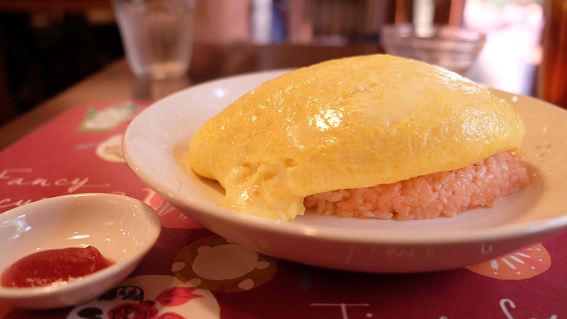
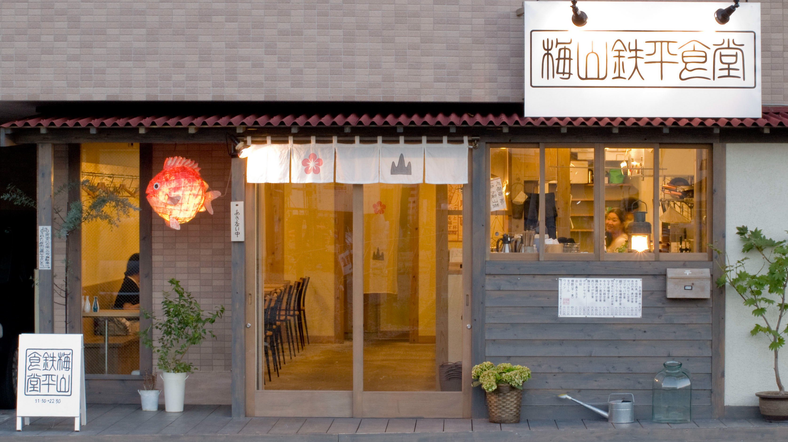
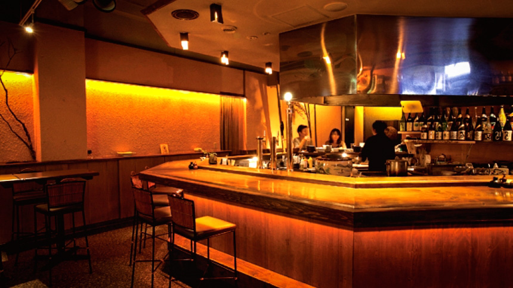
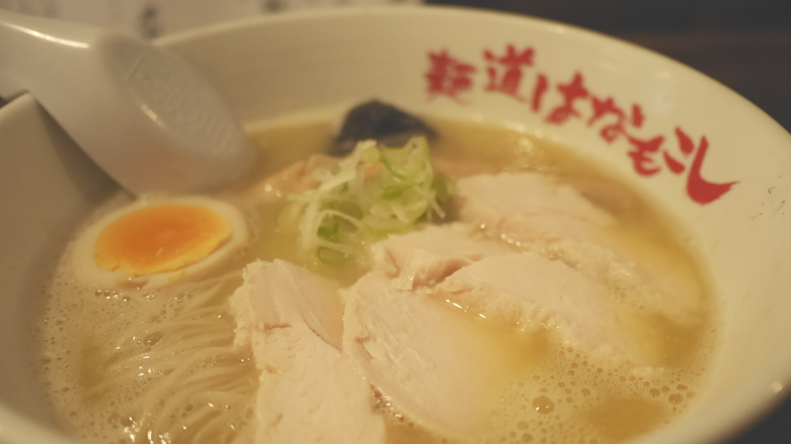

映画鑑賞
ABOUT TIME
この映画は自分が一番好きな映画です。
ざっとあらすじをまとめると、
主人公ティムが21歳になった日の次の日
彼の父から一族の秘密「タイムトラベル」の事を知らされます。
「とても便利な力だが、金儲けのために使うな。自分の理想の人生を送るために使え。」
と忠告されティムは言われた通り理想の人生の為に力を行使していく。
といった恋愛SF映画です。
ここまでだと大分薄い内容な感じですが、あらすじとしてまとめるには
尺が足りないので見られてみるといいと思います。
Youtube
鴨頭嘉人
炎の講演家 「鴨頭嘉人」として活動されている。
YouTubeに講演の動画をアップし続けるとそれが大好評に
現時点（2020/01/22）では登録者数99.8万人と100万人まで秒読みとなっている。
人柄、話す内容、そして共感を武器に
どの動画をみても納得させられたり、感銘を受けたり、
これは改善しなければ！と思わされる。
様々な影響をもたらしてくれる動画を配信されている。
大愚和尚
僧侶であり、セラピスト、空手家、社長など様々な顔を持つ。
大愚で「たいぐ」と読む。
以前から行っていたメルマガの返答をYoutubeにアップしたところ、
それが次第に人気になっていき現在18万人の登録者がいる。
仏教を交えたありがたい話を皮切りに、世の中の様様々な問題の解決策や考え方、
はたまた恋愛についての悩みも受けたり、様々なジャンルの動画をアップされている。
人を引きつける声で、声フェチの自分としては声優の関俊彦さんの次に好きな声である。
ShibaInuPunchan
多くは語りません。見てください。可愛いので。
美味しいごはん屋さんの開拓
お気に入りのお店
-
- siro coffee
-
地下鉄空港線の西新駅から徒歩5分程の場所に位置するカフェ。
店長(男)が中性的で儚げな雰囲気がある。かわいい。(いい意味で)
いつも並びが出来ている。
いわゆる「映え」を求める若い女性が主に訪れている印象。
このお店のチーズケーキとほうじ茶ラテが好き。
-

- 五穀
- 地下鉄七隈線の六本松駅から
地上に出てすぐのところに位置するオムライス屋さん。
なんといっても明太子をふんだんに使用した明太子ご飯に
胃がもたれると思うほどふわふわで分厚い卵が乗った
「明太子オムライス(通称メンオム)」が定番。
他にもガーリックを使用したおオムライスや丼物もあるが
メンオムが美味しすぎてほかのを食べたことがない。
女性や子供といったらテンション上がること間違いなし。
-

- 梅山鉄平食堂
- 西鉄薬院駅から徒歩5分程のところに本店がある。
最近キャナルシティの近くにも新店舗ができた。
刺し身、煮付け、ユッケ、ゴマサバなどの魚料理が絶品。
魚と定食への愛を感じるお店。
定食のお味噌汁が初めて飲んでも謎の安心感があるくらい
体に馴染む、美味しい。
ご飯おかわり無料なのも嬉しいポイントである。
好きなメニューはまぐろユッケにだし巻き卵をつけたメニュー。
-

- スズメバチ
- 春吉にある「隠れ家居酒屋」。
隠れ家過ぎて看板が無く、
初見ではたどり着けない可能性がある。
かなり落ち着いた雰囲気でゆっくり飲むことができる。
そして食べ物が全部美味しい。
一番オススメするのは手羽先(塩)であるが、
気になったものは全て食べてみてほしい。
本当にハズレがない。店長も気さくで話しかけやすい、
というか話しかけてくる。いい人。
冬季限定で数量限定だがカレーもまた絶品。
-

- 麺処はなもこし
- 西鉄薬院駅から徒歩15分程のところに位置するラーメン屋さん。
ここだけの話福岡県内のラーメン屋さんで一番美味しいと思う。(江郷比較)
ここの鶏そばが語彙力が欠如するくらい本当に美味しい。
口当たりなめらかで軽めの、しかし存在感のあるスープに
細すぎず太すぎないストレート中麺でかなり高い完成度を誇っている。
しかし店長のこだわりが強く営業時間がとにかく短い。そして無愛想。
食べ終わった後の替え玉「赤い玉(時期によって名称が異なる)」は外せない。
麺だけでませて食べられるまぜそばのような替え玉となっている。
半分ほど食べた後丼に投入すると
鶏そばの優しい味わいに油と絶妙な辛さが混ざり合い、
また違った味わいを楽しむ事ができる。
一杯で3度美味しいラーメンになっている。
自己学習
今取り組んでいること
HTML/CSS
ランサーズ等のサイトで収入を得られるようにと思い、
ドットインストールやYoutube等を用いて勉強している。
後々PHP等も勉強していく予定
Rails
Railsでポートフォリオを作れる様になるために
現在足を突っ込みかけている。
まだ具体的に進んではいない。
英語学習
ネイティブの小学生が使う教科書
「Grammer in Use」を使って勉強している。
今現在Essentialを終え、中級のものに入っている。
これを毎日解きながら語学研修で出来た
２０歳の友人miloとインスタグラムでやりとりしたり、
リー先生と話したりしながら会話する力を身に着けようとしている。
通学時間には必ず行きで字幕付きの英語の動画や映画を、
帰りに英語字幕付きで英語の動画や映画を見て、
耳が英語を聞くようにしている。